01 / Signal
A confident E with an independent voice pulse. Simple, structured and unmistakably a software brand. The strongest fit for a product-led SaaS identity.
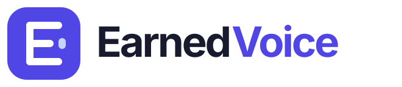
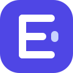
One color
Reverse
Six original identity directions. Each includes a full wordmark, standalone symbol, monochrome treatment and small-size preview.
A confident E with an independent voice pulse. Simple, structured and unmistakably a software brand. The strongest fit for a product-led SaaS identity.


A sculpted V formed by rising ribbons, with an E-inspired rhythm on its left edge. More assertive and enterprise-focused: momentum, progress and earned visibility.
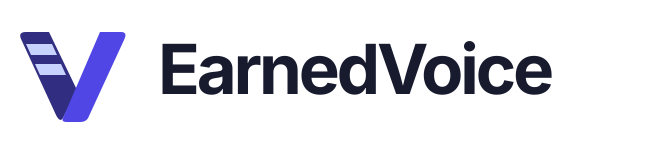
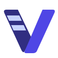
An open circular e with a conversation tail and a single voice point. Friendly without becoming playful, designed around dialogue, recognition and connection.
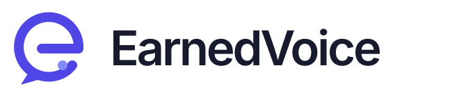
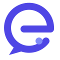
Three more focused directions: an architectural monogram, a voice-first conversation symbol and a flowing typographic mark. Designed for clear recognition across product navigation, app icons and business communication.
A precision-cut E meets a forward V ribbon. Solid geometry, compact proportions and an ownable letter structure create a confident, enterprise-ready signature.
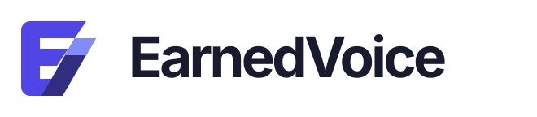
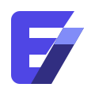
A strong speech silhouette with three balanced voice bars. An immediate link to communication, with generous negative space and a distinct rhythm that stays legible at small sizes.
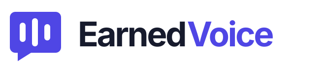
A continuous lowercase e with a directional finish. The circular flow connects voice, publishing and momentum, paired with a quieter wordmark for a modern editorial feel.
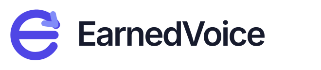
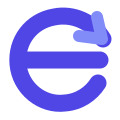
Concept artwork, not a change to the live brand. Original marks: no Razorpay, Lyzr, Amazon or Flipkart assets were copied. Symbols are pure vector paths; wordmarks retain editable text using Inter with an Arial fallback. Final production typography should be outlined after a direction is selected. Monochrome treatments shown here are visual previews. Trademark clearance has not been performed.